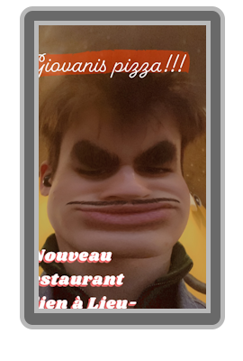

Vers ses 25 ans, Giovanni Tibiano a révolutionné la gastronomie en créant les pizzerias Giovanni's Pizza. Son coup de génie ne réside pas dans la sauce, mais dans le "Ballet du Pizzaiolo". Giovanni a dessiné à la craie, sur un terrain de tennis abandonné à Naples, les positions exactes de chaque employé pour réduire le temps de préparation d'une Regina à 24,3 secondes précises.
Chaque geste est millimétré : le lancer de pâte doit atteindre un angle de 45 degrés pour une oxygénation optimale. C'est ainsi qu'il a produit les pizzas les plus délicieuses (et les plus rapides) du monde.
| Poste | Action | Temps imparti (s) |
|---|---|---|
| Le Malaxeur | Écrasement de la pâte | 4.5s |
| Le Sauceur | Mouvement circulaire parfait | 3.2s |
| Le Dark Giovanno | Regard de validation finale | 1.0s |
Giovanni n'a jamais voulu un restaurant, il voulait une machine. Son obsession pour la standardisation est telle qu'il aurait exigé que ses 13 enfants soient rangés par taille et par efficacité lors des repas de famille. On raconte qu'il a tenté de franchiser sa propre vie privée, vendant des licences "Tibiano" à ses cousins pour qu'ils puissent utiliser son nom de famille lors des mariages.
| Date | Étape de la Conquête |
|---|---|
| 2022 | Invention de la boîte à pizza octogonale pour gagner 2cm d'espace. |
| 2024 | Ouverture du premier drive-in pour gondoles à Venise. |
| 2026 | Giovanni refuse de vendre son nom à un investisseur mystérieux, préférant rester "pur". |
Dark Giovanno mène sa vie de famille comme ses cuisines. Ses 13 enfants, âgés de 7 à 21 ans, sont tous formés à l'art de la logistique de la tomate. Le plus âgé est pressenti pour reprendre la gestion des stocks mondiaux, tandis que le plus jeune s'occupe déjà de l'étalonnage des thermomètres laser des fours.
"Si vous avez le temps de cligner des yeux, vous avez le temps de rajouter une olive." - Giovanni Tibiano, manuel de formation.